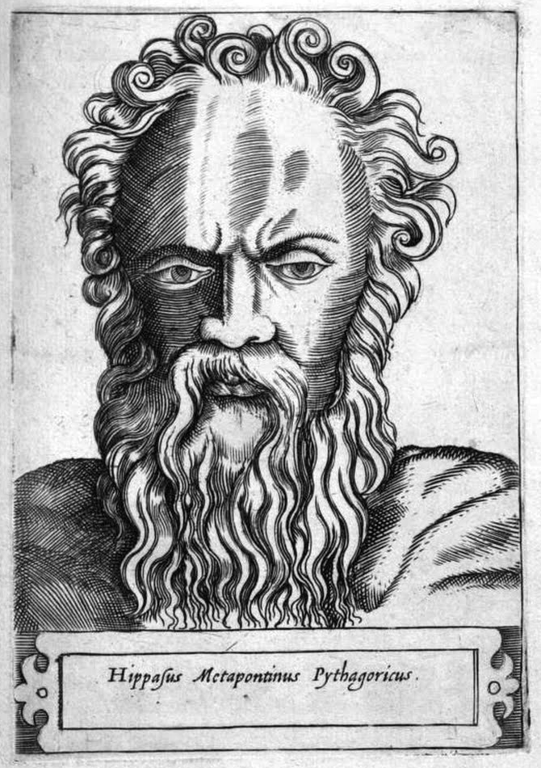

c. 530–450 BC
Greek, Metapontum
Number theory, geometry
Hippasus of Metapontum is one of the most mysterious figures in the history of mathematics. A member of the Pythagorean school, he is traditionally credited with the discovery that $\sqrt{2}$ is irrational — a result that shattered the Pythagorean worldview and, according to legend, cost him his life.
The Pythagoreans believed that all of reality could be expressed through ratios of whole numbers. "All is number" was their creed. When Hippasus showed that the diagonal of a unit square has a length that cannot be written as a fraction — that $\sqrt{2}$ is incommensurable with $1$ — it destroyed the foundation of their philosophy. The standard legend, reported by Iamblichus and others, says that the Pythagoreans drowned Hippasus at sea for revealing this discovery to outsiders. Whether this actually happened is impossible to verify, but the story captures a real mathematical trauma: the integers are not enough to measure even the simplest geometric lengths.
The proof attributed to Hippasus — a proof by contradiction showing that if $\sqrt{2} = p/q$ in lowest terms, then both $p$ and $q$ must be even — remains one of the most beautiful arguments in all of mathematics. It appears in essentially the same form in Euclid's Elements (Book X, Proposition 117, though this may be a later interpolation) and is the first proof most students encounter in this course.
| Phase | Page | Referenced for |
|---|---|---|
| Phase 0 | The Pythagorean Theorem | Discovery caused a crisis in the Pythagorean school |
| Phase 0 | Square Root of 2 is Irrational | Legend of being drowned for revealing irrationality |